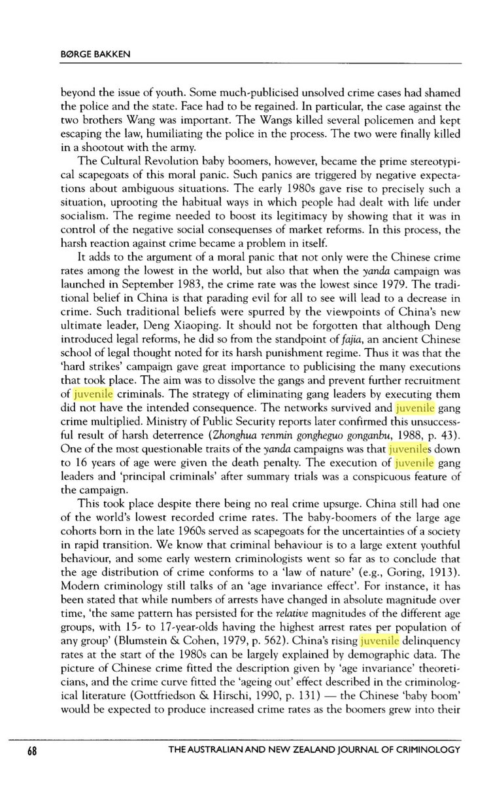
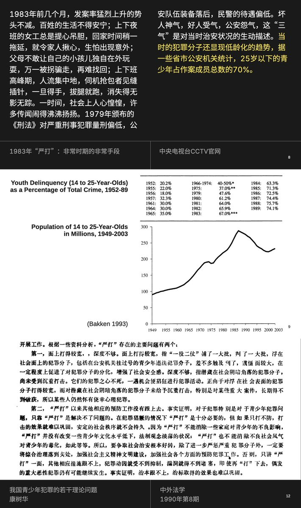

为了寻找更有可持续性的替代方案，在法学界的大量讨论和倡议下（也同时是在向西方「先进国家」学习借鉴的情况下），1991年2月19日，中共中央、国务院作出了《关于加强社会治安综合治理的决定》，开始重新探索「群众路线」「枫桥经验」等基于社区的警治方案。90年代，随着「社会/生理性别」概念的译介和体制化、由批判铁娘子产生的对「妇女回归家庭」的传统主义呼吁、户籍制度因城乡二元制和地区不平等发展重新发挥的对人口流动的管控功能、以及单位制度因政企私有化改革的逐渐解体，「家庭」被重新放在了人口管理的核心位置，也被视为了对青少年犯罪这一「破坏社会主义市场经济」的严重要素进行规范和管控的第一道防线。




上世纪80年代改革开放之后，邓小平等人由于不熟悉犯罪学和统计学常识，不了解发展中国家因人口经济增长普遍会出现的青少年犯罪率增高问题，误读了当时关于青少年犯的统计数据，并错误地得出了「中国的青少年经济犯罪极其严重需要严厉打击」的结论，于1983年开始执行「严打」政策。 https://t.co/NUEV2DQ1y0